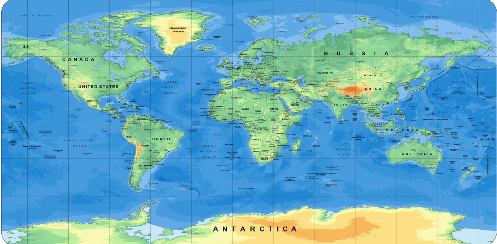

Gens una sumus
Suntem o singură familie
Fiecare națiune a dăruit șahului o super-putere — deschide sertarele din dreapta →
După o călătorie de sute de ani prin deșerturi și jungle, jocul a trecut munții în Europa. Aici, fiecare țară i-a oferit o super-putere: Spania i-a dat aripi Reginei, Italia a inventat rocada, iar Anglia a adus ceasul de șah. Deși vorbeau limbi diferite și uneori se războiau, pe tabla de 64 de pătrate toți deveneau egali. De aceea, șahiștii din toată lumea au adoptat un motto în limba latină: Gens una sumus — „Suntem o singură familie".